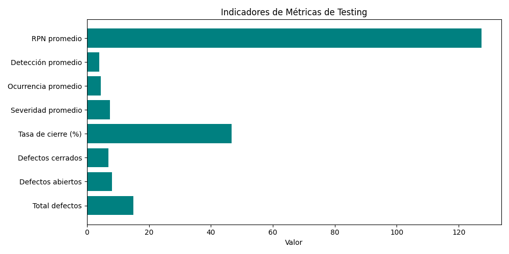

📊 Dashboard de Métricas (2025-11-05)

Indicadores
Total defectos: 15
Defectos abiertos: 8
Defectos cerrados: 7
Tasa de cierre (%): 46.67
Severidad promedio: 7.47
Ocurrencia promedio: 4.53
Detección promedio: 3.93
RPN promedio: 127.4